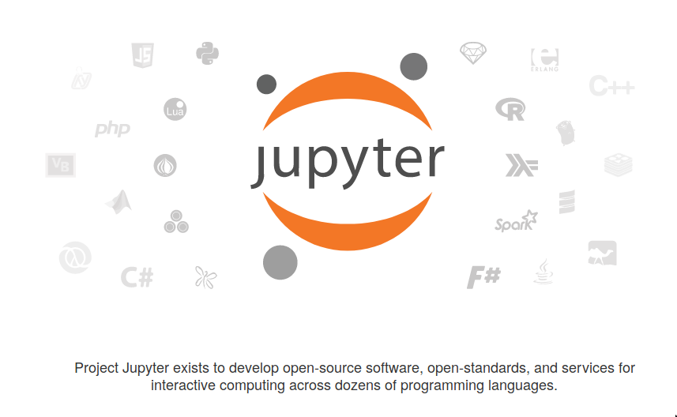

Storytelling with Data
January 22, 2018
Getting Acquainted with Our Analytic Environment
What is an
Operating System (OS)?
A bridge between applications and hardware

Graphical User Interfaces are quite popular

An OS GUI is just a special type of shell
Text-based shells (e.g. the Windows command prompt or Bash) can present as intimidating, but they are your best friend. Graphical shells are just wrappers around some of the commands that shells can execute.
What is a Virtual Machine?
Applications that emulate software systems
- VMs allow you to try another OS without a full install
- VMs can enable the use of applications that cannot be run on some systems
- VMs can help us ensure that all of our programs run the same way
Why are we using Virtual Machines?
- When software is developed, it assumes a given method of locating the resources it needs
- Typically, software is developed in a single environment, and then adapted to work elsewhere
- Adaptions can create complications in application behavior
What is Linux?

Linux is not an OS. It's a kernel
Developed by Linus Torvaldis, Linux is a catchall name for an open-source kernel.

A kernel is only one part of the OS...
...but it is the most important part. All in, an OS provides a variety of functions:
- Loads and manages processes
- Provides interface to hardware
- Provides a file system
- Provides a user interface
The kernel essentially coordinates these tasks.
Why do we care again?
- Linux distributions tend to be free for personal use
- Linux distributions tend to be open source
- Linux distributions tend to come packaged with many useful development tools and libraries
- For all these reasons, analytic packages are often designed and tested for use on Linux systems
Enter Ubuntu...
Ubuntu is one of the most popular Linux distributions because...
- ...the GUI is intuitive and easy to use;
- ...it provides full shell functionality
- ...it makes it easy to install and run programs
Ubuntu is an OS, not a GUI
/xfce2-5806ec9f3df78cbc28aa61d0.png)
How do I use a Linux distribution like Ubuntu?
(Spoiler: you can use it just like Windows or macOS)
Suppose I want to open an editor like Atom
You can navigate to the Atom Editor icon and simply double-click on it...
... or you can use your friend, the shell

Then you can code to your heart's content.

Bash is probably the most ubquitous shell in common usage on Unix systems
The best way to learn about it is by using it
Bash is a low-level interface that allows the user to issue commands to the computer at the command line or by executing a script. Features include but are not limited to ...
- ...potentially complex file management
- ...permissions control
- ...process management
- ...application installation and control
You will be using Bash to, at the very least, start up your VM and version control your projects

Python is a general purpose computing language

We will lean heavily on the Anaconda distribution

The biggest advantage of Anaconda is the conda package manager
- conda runs on Windows, macOS, and Linux
- It helps find and install packages
- It manages dependencies across packages
- It makes it easy to manage package environments
The Anaconda project is also coupled tightly with the Jupyter project
Our coding environment: Jupyter Lab

Jupyter Lab offers multiple ways to use Python
A Python interpreter can always be started from the command line with `python` or `ipython`. Jupyter Lab provides more options:
- Qt Console is an enhanced interpreter that allows for inline charting
- Notebook is a web-based application that allows inline charting, embedding of links and other resources, and the flexibility of web development
- Since a shell is available inside of JLab, you can also execute Python scripts that you have written in an editor tab.
To code is good, to replicate divine

Version control is not a silver bullet...
...but it is a necessary component of reproducible research

It enables you to code without fear of mistake, because you can always go back to an earlier version
Github will be our coordinating mechanism

- You will need to create a Github account
- Github has a great collection of guides for common tasks
- A solid cheat sheet of common commands is available
- For more than you ever wanted to know, check out Pro Git
Data files can come in a wide variety of formats

They do not always look like tables!
There is a big world out there beyond Excel:
- Tabular data (e.g. CSV, TSV, fixed width)
- Non-tabular data (e.g. JSON)
- Spatial data (e.g. SHP, GeoJSON)
- Relational database data (e.g. DB)
Sometimes data will not come from locally stored files
- We can simulate data via random draws from a statistical distribution
- We can hard code data
- We can access data from remote server
What's all this about remote servers??

Any time you visit a website, you are using a remote server
A server is just another computer that you have connected to that holds the content you want.

It turns out data can be accessed in a very similar way with the right Uniform Resource Locator (URL)
Enter Data Application Programming Interfaces...
An API, in general, is just a clearly defined set of methods that allow software components to communicate with each other. In the data realm, APIs help our machine communicate with a remote server via URL, so we can retrieve data from it.